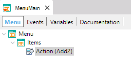
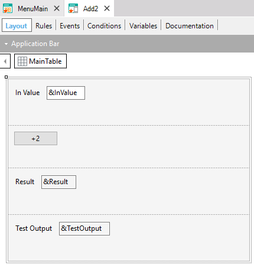
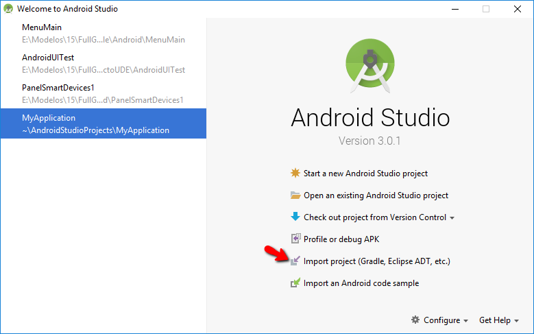
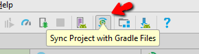
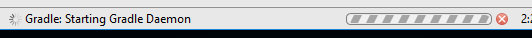
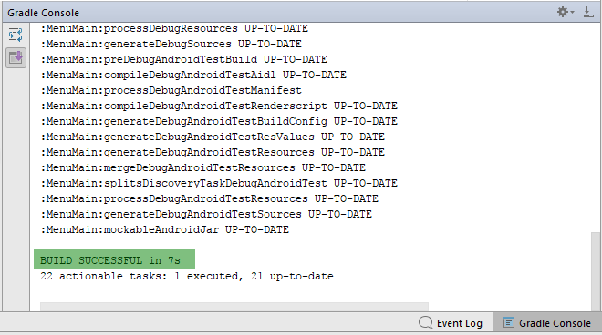
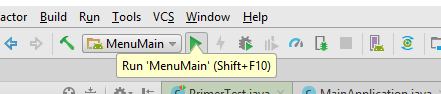
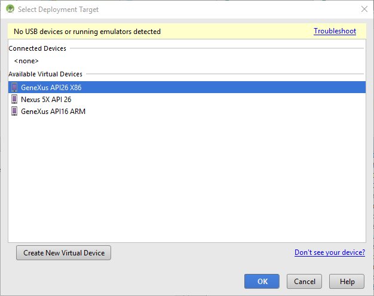
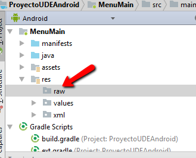

This tutorial shows how to create and run an automated UI Test of your GeneXus Android application.
| Component |
Minimum required |
| Android Studio |
2.3.3 |
| GeneXus 15 |
Upgrade 10 |
Set the Enable Test Mode property = True in your main object.
Set the Android Package Name property= com.artech.<main name> in your main object.
Suppose there is a Smart Device application, more specifically, an Android application, with a Menu object that calls an SDPanel.
|  |
Event 'Add2'
Add2()
Endevent
|
In the "Add2" SDPanel there is an &InValue variable to enter the value to which it will be added, and a "+2" button that makes the sum.
|  |
Event ClientStart
&InValue = 2
EndEvent
Event '+2'
Composite
&Result = &InValue + 2
If &Result <> 4
&TestOutput = "Error"
Else
&TestOutput = "Test OK"
EndIf
EndComposite
EndEvent
|
The automation implies that when reaching the "Add2" panel, the result of adding 2 to the &InValue variable is 4.
To do so:
-
Copy the GeneXus-generated Android project to a new directory.
For example, copy the contents of C:\<model>\<KB_name>\<environment>\mobile\Android a C:\MyTests\<KB_name>_test.
-
Delete the following subdirectories and files:
-
Folder .gradle
-
Folder build
-
Folder <main object name>\build
-
Open Android Studio and import the project from C:\MyTests\<KB_name>_test\build.gradle

-
Check that the following directory has been created :
C:\MyTests\<KB_name>_test \<Main_object_name>\src\androidTest\java\com\artech\menumain\UITestSample.java
- Try to compile what you have done so far. To do so, look for this icon :
“SyncNow” (Ctrl+Shift +A Sync Project with Gradle Files)

Also, confirm that something similar to the following is displayed below it:

Locate the “Gradle Console” and confirm that it ends OK.

- Run the application from Android Studio IDE:

Select the emulator and click OK.

-
The application will be run in the emulator. Look for errors in the Gradle console.
- Delete the metadata.

- Tests are programmed in:
C:\MyTests\<KB_name>_test \<Main_object_name>\src\androidTest\java\com\artech\menumain\UITestSample.java
For example:
package com.artech.menumain;
import android.support.test.filters.LargeTest;
import android.support.test.rule.ActivityTestRule;
import android.support.test.runner.AndroidJUnit4;
import org.junit.Rule;
import org.junit.Test;
import org.junit.runner.RunWith;
import static android.support.test.espresso.action.ViewActions.click;
import static android.support.test.espresso.assertion.ViewAssertions.matches;
import static android.support.test.espresso.matcher.ViewMatchers.hasDescendant;
import static android.support.test.espresso.matcher.ViewMatchers.withText;
import static com.genexus.uitesting.ControlMatchers.withLabelCaption;
import static com.genexus.uitesting.DataMatchers.withMenuItemTitle;
import static com.genexus.uitesting.Selectors.onControl;
import static com.genexus.uitesting.Selectors.onMenu;
/**
* Created by UBartram on 19/1/2018.
*/
@RunWith(AndroidJUnit4.class)
@LargeTest
public class PrimerTest {
@Rule
public ActivityTestRule<Main> mActivityRule = new ActivityTestRule<>(Main.class);
@Test
public void testOne() {
// Selects the Menu item
onMenu(withMenuItemTitle("Add2"))
.perform(click());
// Selects a control that has this text
onControl(withText("+2"))
.perform(click());
// Compares the text of the &Result variable to "4"
// (the text of the variable value, which is displayed on screen)
onControl(withLabelCaption("Result"))
.check(matches(hasDescendant(withText("4"))));
// Compares the text of the &TestOutput variable to "Test OK"
onControl(withLabelCaption("TestOutput"))
.check(matches(hasDescendant(withText("Test OK"))));
}
}
- It is strongly recommended that you rename the UITestSample.java file created in item (9) to <Main>UITests.java and attach it as a File object to the KB where the test was created.
The purpose is that the next time the KB is compiled, the associated test file is generated instead of the UITestSample.java, as indicated in item (4).
Warning: The file name must follow the naming convention <Main>UITests.java.
All expressions created with the API have the following format:
<Selector>
.perform(<Action>)
.check(<Assertion>)
- onControl: Selects a Genexus control based on the condition imposed by the supplied ControlMatcher.
- onGrid: Selects a Grid Row based on the condition imposed by the supplied DataMatcher.
- onMenu: Selects a Menu Item based on the condition imposed by the supplied DataMatcher.
- withName: Matches a GeneXus control based on its control name.
- withThemeClass: Matches a GeneXus control based on its theme class name.
- withLabelCaption: Matches a GeneXus control based on its label caption.
- withTextInRow: Matches a Grid Row based its text content.
- withMenuItemTitle: Matches a Menu Item based on its title string value.
- click
- doubleClick
- longClick
- typeText
- scrollTo
- swipeLeft
- & more ...
View the Android Developer - View actions for more actions.
- matches(isDisplayed())
- matches(withHint(string))
- matches(withText(string))
- matches(withTextColor(colorResource))
- matches(isChecked())
- & more ...
View the Android Developer - View matcher for more ways to form assertions
This mechanism can be used as of Genexus 15 Upgrade 10.
|